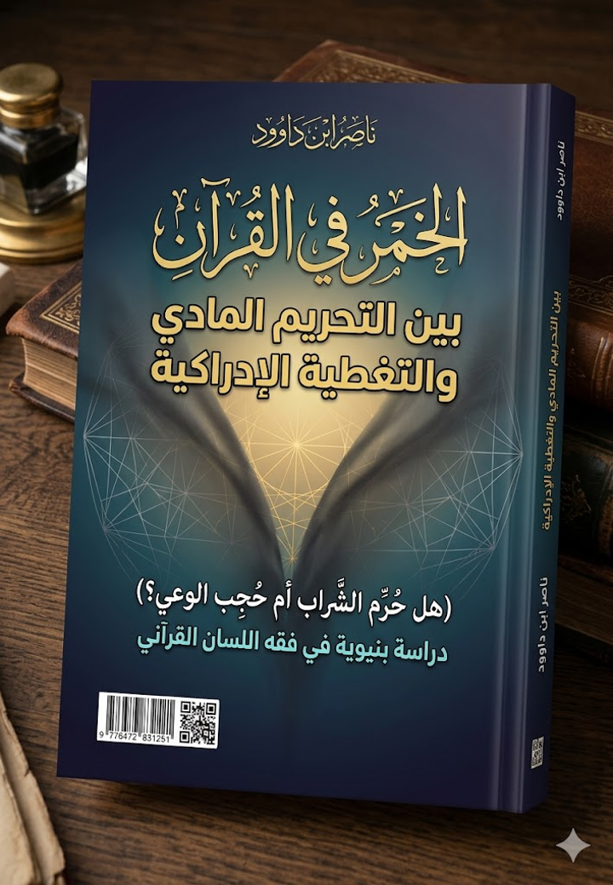

ناصر ابن داوود

نسخة نصية مستخرجة من ملف Word الذي قدمه المؤلف؛ راجع المصدر الأصلي.
جارٍ تجهيز القارئ…
الخمر في القرآن بين التحريم المادي والتغطية الإدراكية
)هل حُرِّم الشراب أم حُجِب الوعي؟ (
دراسة بنيوية في فقه اللسان القرآني
── التمهيد والمدخل المنهجي ──
ملخص تحليلي لكتاب "الخمر في القرآن: بين التحريم المادي والتغطية الإدراكية"
هذا الكتاب ليس مجرد دراسة فقهية حول حكم الخمر، بل هو مشروع فكري طموح لإعادة بناء المنهجية التي يُقرأ بها النص القرآني برمته، متخذًا من مفهوم "الخمر" نموذجًا تطبيقيًا ونقطة انطلاق لأزمة معرفية أوسع.
أولاً: الإشكالية المركزية والأطروحة الرئيسية
الإشكالية: يرى المؤلف أن الفهم الإسلامي التاريخي للخمر عانى من اختزال منهجي، حيث تحول المفهوم من "نظام دلالي متحرك ومتعدد الطبقات" في القرآن إلى "حكم فقهي مغلق" يركز على المادة (السائل المسكر) ويتجاهل البنية الوظيفية العميقة.
الأطروحة الرئيسية: يفترض الكاتب أن العلة الأساسية لتحريم الخمر ليست في "المادة" نفسها، بل في "الوظيفة الإدراكية" التي تؤديها، وهي "تغطية الوعي وتعطيل الإدراك" (التغطية الإدراكية). بعبارة أخرى، القرآن يحرّم كل ما يُحدث "خمرًا" في العقل، أي كل ما يغطيه ويحجبه عن رؤية الحقيقة والتمييز الواعي (الفرقان)، سواء كان هذا الشيء شرابًا مسكرًا، أو نظامًا فكريًا، أو أيديولوجية، أو جمودًا تراثيًا.
ثانيًا: المنهجية المبتكرة "فقه اللسان القرآني"
لإثبات أطروحته، يبتكر المؤلف منهجية جديدة أطلق عليها "فقه اللسان القرآني" أو "الهندسة البنيوية"، وتقوم على عدة ركائز:
التحليل الجذري الحركي: لا يكتفي بالمعنى المعجمي الساكن للكلمة، بل يتتبع "القاع الحسي الحركي" للجذر اللغوي (مثل خ م ر التي تعني الستر والتغطية، وس ك ر التي تفكك إلى سَكَّ للإغلاق وكَرَّ للتكرار والدوران). هذا يكشف البنية العميقة للفظ.
الاطراد النسقي: ينظر إلى القرآن كنظام كلي متكامل، فلا يُفسر مفهوم بمعزل عن الآخر. فالخمر يُدرس في علاقته بـ "السكر، والميسر، والأنصاب، والأزلام، والعداوة، والبغضاء، والصد عن الذكر".
التحليل الوظيفي والمآلي: يركز على "أثر" الشيء و"وظيفته" و"مآله" (عاقبته) في الفرد والمجتمع، بدلًا من التركيز على جوهره المادي فقط. فالعبرة بتعطيل الوعي، لا بتركيب الكحول.
ثالثًا: تفكيك البنى التقليدية والإشكاليات الحديثة
يقوم الكتاب بعملية نقدية مزدوجة:
نقد القراءة التراثية (فقه الأعيان): يرى أن الفقه التقليدي وقع في "اختزال" بحصر الخمر في السائل المسكر، مدعومًا بقراءة حديثية وأسباب نزول تاريخية جمدت المفهوم. هذا أدى إلى "فقه أعيان ومواد" عاجز عن مواجهة "خمور العصر" الفكرية والإعلامية.
نقد القراءة الحداثية التفكيكية: ينتقد في الوقت نفسه تيارات معاصرة (مثل أفكار محمد شحرور) التي ألغت البعد المادي تمامًا وتبخرت النص، معتبرًا أنها وقعت في "فوضى تأويلية" وفصل تعسفي بين اللفظ ومعناه الحسي، مما يفقد النص صلابة معياره.
رابعًا: البنية الجديدة للمفهوم (النواة الصلبة والامتداد الوظيفي)
يقدم الكاتب حلاً بديلاً عن طريق التمييز بين مستويين للمفهوم:
النواة الصلبة (المادة): يُقر الكاتب بتحريم المادة المسكرة تحريمًا قطعيًا، باعتبارها "النموذج التطبيقي الأبرز" والأوضح لآلية تغطية الوعي. هذا يحمي النص من السيولة والانفلات التأويلي.
الامتداد الوظيفي (البنية البرمجية): ينطلق من هذه النواة ليشمل كل ما يؤدي نفس الوظيفة الإدراكية (التغطية والحجب)، مثل:
الخمر المعرفي: الجمود الفكري والتقليد الأعمى للتراث.
الخمر الأيديولوجي: الأنظمة الفكرية المغلقة التي تحتجب عن النقد.
الخمر الإعلامي: الدعاية والتضليل وهندسة الإدراك الجماعي.
بهذا، يعيد الكتاب تعريف الخمر وظيفيًا على أنه: "كل عامل (مادي أو معنوي) يؤدي بطبيعته إلى إحداث حالة 'تغييب وإغلاق إدراكي' تعطل وظيفة 'الفرقان' وتمنع الإنسان من ممارسة دوره في 'الاستخلاف'."
خامسًا: الأدلة البنيوية المحورية
يستند الكاتب إلى أدلة قرآنية مركزية:
آية المائدة (90-91): ربط الخمر بالأنصاب والأزلام في منظومة واحدة "رجس من عمل الشيطان" وأمر بـ "الاجتناب"، ليس فقط المنع. هذا يؤكد أن المسألة منظومة سيطرة إدراكية متكاملة.
آية النساء (43): لا تقربوا الصلاة وأنتم سكارى حتى تعلموا ما تقولون يثبت أن العلة هي فقدان "العلم بالقول" وتعطيل الوعي، وليس مجرد وصف مادي.
آية الصافات (45-47): وصف خمر الجنة بـ لا فيها غول ولا هم عنها ينزفون. هذا يُعتبر "القفل المعرفي" للأطروحة، حيث يُثبت أن ما حُرّم في الدنيا ليس "اللذة" أو "المادة"، بل "الغول" (اغتيال الوعي) و"النزف" (استنزاف العقل). إذا انتفى الأثر، زال التحريم.
خاتمة: الكتاب كـ "بروتوكول تحرير إدراكي"
في جوهره، هذا الكتاب هو دعوة لتحول إبستمولوجي في العقل المسلم. يستخدم قضية الخمر ليشخص "حالة السكر الحضاري" التي تعيشها الأمة نتيجة تقديس الموروث البشري وتعطيل آلات النقد والتدبر.
الغاية النهائية ليست مجرد فهم آية أو حكم فقهي، بل هي بناء "إنسان غير قابل للاستلاب الإدراكي"، إنسان يقظ، شفاف الوعي، قادر على "التأويل السنني" (ربط الرموز بالواقع والقوانين الكلية) بدلًا من "الفتوى الظرفية"، ليكون أهلاً لمهمة الاستخلاف وعمارة الأرض. إنه كتاب ثوري في منهجه، محافظ في ثوابته، ومتجدد في آفاقه.
التقديم العام
لماذا هذا الكتاب؟
لم يعد سؤال «الخمر» في الوعي الإسلامي المعاصر مجرد نقاش فقهي جزئي يتعلق بحكم مادة معينة، بل تحول إلى نافذة تكشف أزمة أعمق تمس طريقة قراءة القرآن نفسه، وحدود العلاقة بين النص والوحي والتراث والعقل واللغة. فكلما أُثير موضوع الخمر، لم يظهر الخلاف فقط حول «المشروب»، بل ظهر اضطراب أوسع يتعلق بمنهج الفهم: هل تُقرأ المفاهيم القرآنية باعتبارها ألفاظًا جامدة مغلقة استقرت معانيها في المدونات الفقهية، أم باعتبارها بُنى دلالية متحركة داخل نظام قرآني متكامل؟
لقد تشكل الوعي الإسلامي التاريخي حول مفهوم الخمر داخل إطار فقهي شبه محسوم؛ إذ ارتبطت الكلمة مباشرة بالمشروبات المسكرة، ثم نُقل هذا الفهم عبر القرون بوصفه معنى نهائيًا مكتملًا لا يحتاج إلى مراجعة أو إعادة فحص. ومع مرور الزمن، انتقل هذا الفهم من دائرة الاجتهاد إلى دائرة المسلمات النفسية والثقافية، حتى أصبح مجرد طرح السؤال حول طبيعة مفهوم الخمر يُستقبل أحيانًا بوصفه تهديدًا للبنية الدينية ذاتها، لا باعتباره محاولة بحثية لفهم النص القرآني بعمق أكبر.
غير أن العودة المباشرة إلى القرآن تكشف أن المسألة أكثر تركيبًا مما يبدو في الوعي السائد. فالقرآن لم يقدّم مفهوم الخمر ضمن آية واحدة مغلقة، بل وزّعه داخل شبكة من السياقات المتعددة: مرة في سياق الإثم والميسر، ومرة في سياق تعطّل الإدراك، ومرة في وصف أهل الجنة، ومرة في رؤيا يوسف، ومرة في الحديث عن الأبصار التي «سُكرت». وهذا التوزيع البنيوي للمفهوم يثير سؤالًا منهجيًا بالغ الأهمية: هل اختُزل المفهوم القرآني الواسع في معنى فقهي واحد؟ وهل جرى الانتقال من «فقه الوعي» إلى «فقه المادة» دون الانتباه إلى التحول الذي وقع أثناء تشكل القراءة التراثية؟